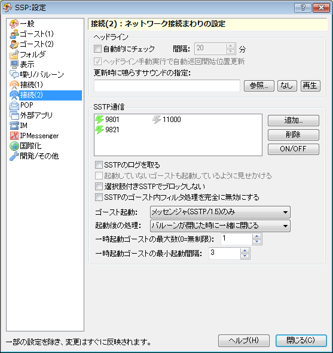

設定：接続(2)
画像左側のリストをクリックすると、それぞれの解説ページへ移動します。

このページでは右クリックメニューの「設定」サブメニューにある項目「本体設定」で開くダイアログの、「接続(2)」ページについて解説しています。
各項目の解説
ヘッドライン
- 自動的にチェック
- ヘッドラインセンスを一定時間ごと時動的に行わせたい場合にONにします。
- ヘッドライン手動実行で自動巡回開始位置更新
- 自動的にチェック機能で、次に実行するヘッドラインを、手動で実行したものの1つ下に設定します。
この機能を解除している場合は、毎回上から順番に巡回します。 - 更新時に鳴らすサウンドの指定
- ヘッドラインセンスによって、更新が見付かった場合に再生するサウンドを指定します。
SSTP通信
SSPがSSTPを受け取るためのポートを設定します。
ここにリストされており、且つ、ONになっているポートが使用されます。
※複数のIPアドレスをもつマシンでは、その全てのIPアドレスに対して受信待ちとなります。
- SSTPのログを取る
-
SSTP通信で受けたスクリプトやイベントの内容をlog\SSTP.logというファイルに書き出します。
このログを使い、トークの内容を変えるゴーストも存在するため、必要に応じてONにしてください。
クリックするとログの最大KB数を指定する画面になります。ログの最大サイズとして指定したい数値を入力してください。 - 起動していないゴーストも起動しているように見せかける
-
他のSSTP対応ソフトのために、起動していないゴーストも起動しているかのように、特定の領域に情報を書き込みます。
この設定をしないと「できる限り指定ゴーストで再生」が機能しない場合があります。 - 選択肢付きSSTPでブロックしない
-
通常、選択肢付きのSSTPが送られてきた場合、送信元に選択した選択肢を送り返すために、選択肢を選択するまで他のSSTPが来ても再生されない状態になります。
これは仕様上の問題ですが、選択肢でブロックされると困る場合（SSTP Bottleの再生等）にこれをONにすることで、挙動を変えることができます。
ただし、その場合選択肢を返してくれる前提で処理しているツールは動作しませんので十分に注意して利用してください。 - SSTPのゴースト内フィルタ処理を完全に無効にする
-
特定のゴーストは、外部からのSSTPを完全遮断したり、特定の指定があるSSTP以外は無視する設定がなされていて、SSTPを喋らない場合があります。
この機能をONにすると、それらをすべて無効にすることができますが、作者さんのキャラ崩れを防ぐ意向を無視することになるので、十分に注意・吟味した上で有効にしてください。 - ゴースト起動
-
SSTP通信において、特定のゴーストを起動する指示があった場合の動作を指定します。
通常はSSP Messenger経由での指示のみ起動する設定です[メッセンジャ[SSTP/1.5]のみ]。
非力なマシンでは「一切起動しない」を強くおすすめします。
余裕のあるマシンでは「できる限り指定ゴーストで再生」を選択するとにぎやかになります（不安定にもなります）。 - 起動後の処理
- 上の設定で一時的に起動したゴーストを閉じるタイミングを指定します。
- 一時起動ゴーストの最大数
-
SSTP経由で一時的に起動するゴーストの最大数を指定します。
この数を超えると以前起動したものから順に閉じられていきます。 - 一時起動ゴーストの最小起動間隔
-
SSTP経由で一時的に起動するゴーストの起動間隔を指定します。
一度に大量の要求が来た場合、前の要求からここで設定した秒数が経過しないと409 Conflictを返し、ゴーストを起動しません。
なお、この設定はゴーストが一時起動しなければならない場合のみ適用されます。必要ない場合は即要求を受け付けます。
下部のボタン
- ヘルプ
-
本体設定ダイアログの、設定中のページのヘルプ（つまりこのページ）を開きます。
ダイアログ右上の「？」マークも同様です。 - 閉じる
-
本体設定ダイアログを閉じます。
ダイアログ右上の「×」マークも同様です。